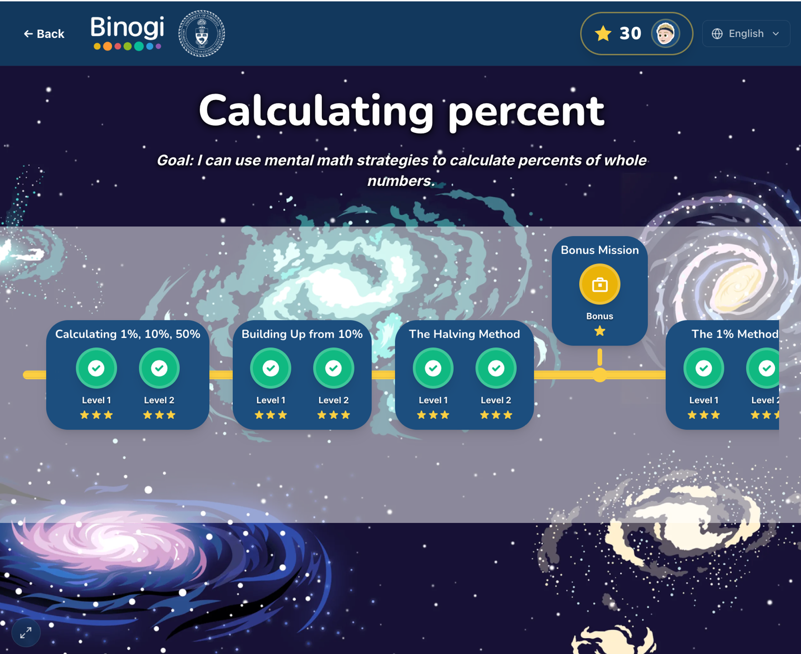

00The research cycle in one glance
01Context
Binogi is a multilingual learning platform used in Ontario schools. Working with OISE, the company wanted to know whether curriculum-aligned learning paths — sequenced lessons, activities and feedback with language switching — could help English language learners prepare for the digital EQAO mathematics assessment. My job sat on both sides of the partnership: collect and analyse the classroom evidence, then work inside Binogi's React/Express monorepo to turn findings into features that shipped.
The two sites were chosen for contrast. At the public secondary school, the Grade 9 class was made up entirely of newcomers in the early stages of English. At the independent school, students had grown up in Canada, spoke and read Arabic at home, and were taught by teachers who shared their language. Same design, two very different relationships to “multilingual support”.

02Research approach
| Method | What it captured | Why it was needed |
|---|---|---|
| Classroom observation (13 visits) | Engagement, moments of disengagement, help-seeking, device sharing | Surveys can't see the moment a student gives up after a wrong answer |
| Pre/post surveys + per-visit self-assessment | Confidence, persistence, perceived usefulness over time | Trajectory across the intervention, not just an end state |
| Teacher interviews | What the platform revealed to teachers about individual students | Surfaced the unexpected “instructional assessment” use case |
| Student focus groups | Which features students valued; EQAO experience | Students' own words on assessment readiness |
| Think-aloud screen recordings | Verbalised reasoning + navigation, second site | To separate “can't read it” from “can't do it” |
| Platform analytics (Mixpanel) | Language switching, attempts, completion | Behavioural ground truth for self-report |
I also maintained the event-tracking guidelines and the researchers' data dictionary in the codebase, so that every new feature shipped with the instrumentation the study needed — analytics were designed with the research questions, not bolted on after.
03What we found
Students disengaged after incorrect responses — and the problem was usually reading, not math
Across both sites, the first difficulties were mathematical vocabulary, interpreting what a task was asking, and unfamiliar digital formats. Observation showed students abandoning a task after a wrong answer rather than using the feedback. Over the intervention, students moved toward cycles of attempt → feedback → revise, and reported greater persistence — but only once feedback was worth reading and instructions were clear.
Multilingual features were not used on their own
Newcomer students at the public school increasingly switched languages when stuck — analytics recorded 17 of the analytical sample accessing a language other than English. At the bilingual-classroom school, almost everyone stayed in English; two students switched when they hit a wall. Uptake depended on students' stage of English acquisition and on whether the teacher already shared their language — and, everywhere, on explicit modelling. A language toggle that nobody demonstrates is a toggle nobody uses.
Teachers used the platform as a diagnostic tool
The most unexpected finding: watching students interact with multilingual supports and feedback helped teachers distinguish between language proficiency, gaps in prior schooling, gaps in mathematical knowledge, digital-assessment demands and mathematical reasoning as the reason a student was struggling. The public-school teacher asked to extend the paths to every Grade 9 math class.
Design implication. Where the classroom is already bilingual, the value of the product is scaffolding, feedback and reflection — not home-language access. Where students are newcomers, the language features carry the load. Onboarding should be adapted to the context rather than delivered uniformly.
04From findings to shipped product
These are the changes I authored in Binogi's production codebase (≈100 commits across the study period), each traceable to a research signal.
| Research signal | Product change | Detail |
|---|---|---|
| Students quit after wrong answers; hints that name the operation immediately teach nothing | Three-tier hint pattern (Identify → Substitute → Operation) | First hint never names the operation; plain-language variables (“rate”, not r) and spelled-out units; codified as a reusable review checklist so every new path follows it |
| The block was reading the word problem, not the math | “Before you solve” reading pre-step | Circle the numbers → underline the question → eliminate the irrelevant sentence, before the answer UI appears. Adaptive fade: withdraws once a student gets a scaffolded question right on the first try |
| “Key words” were contested by teachers and only existed in English | Dropped the “box the key words” phase | A research-driven negative decision: a scaffold that can't be translated and that experts disagree on doesn't ship |
| Word-problem contexts were unfamiliar to newcomers | Canadian-context distractors on the Percent path | Distractor sentences use everyday Canadian contexts so students practise reading past them |
| Curriculum coverage gap (Ontario C1.5) | New Solving Equations learning path, Lesson 4: Formulas & Substitution | Designed, built, revised through reviewer feedback and released to production, in 34 languages |
| Newcomers switch languages when stuck; RTL learners hit layout bugs | 34-language i18n + RTL rules | Translation namespaces, translator guides per language, an “InteractionZone” pattern that keeps spatial content LTR while text follows the reader's direction |
05Impact
The Year 1 report (co-authored with the PI and two colleagues) recommends scaling to more classrooms in the board and additional grades at the second site, equalising session exposure across cohorts, and extending the independent-session model. Year 2 will run the refined platform at that larger scale.
06What I learned about working in a product organisation
- Write the decision down where engineers will find it. I turned reviewer feedback on hints into a skill file in the repo, not a slide deck. The next learning path inherited the rules automatically.
- Small samples are honest, not weak. The report says “exploratory” and explains why uptake differences can't be attributed to student profile alone. Stakeholders trusted the findings more for it.
- Instrumentation is a research method. Getting the data dictionary right before a feature shipped saved weeks of guessing what an event meant afterwards.